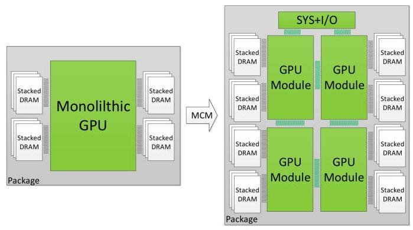
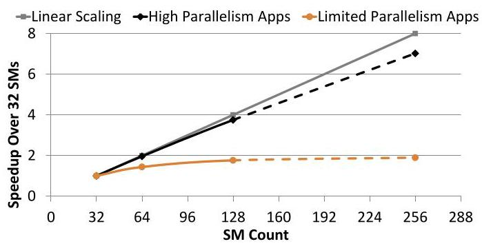
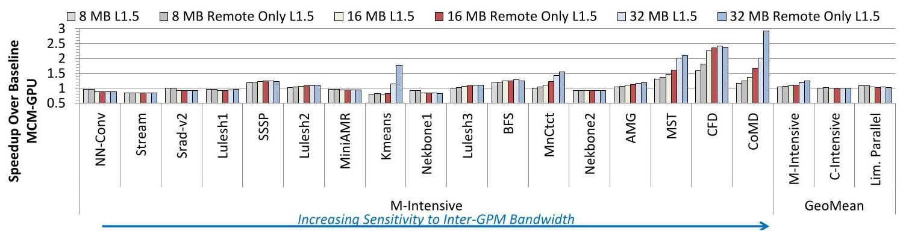
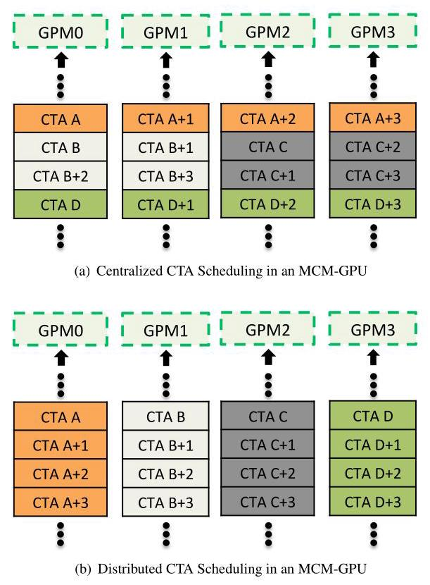
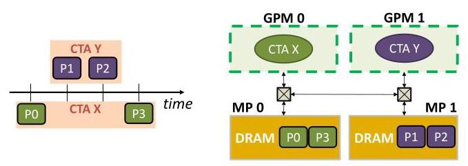
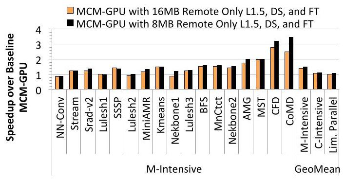
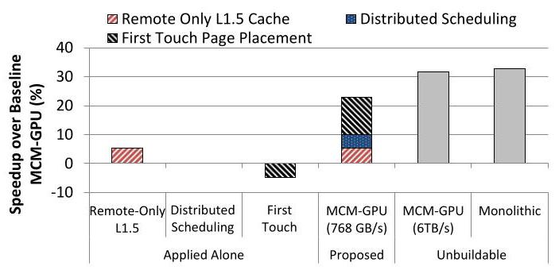
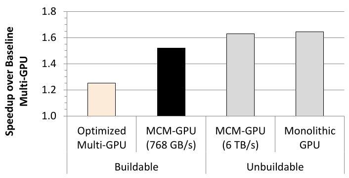

MCM-GPU: Multi-Chip-Module GPUs for Continued Performance Scalability 深度解读
作者：Akhil Arunkumar, Evgeny Bolotin, Benjamin Cho, Ugljesa Milic, Eiman Ebrahimi, Oreste Villa, Aamer Jaleel, Carole-Jean Wu, David Nellans
会议/期刊：ISCA 2017
一句话总结：本文提出把多个可制造的 GPU Module (GPM) 封装成一个对软件透明的单逻辑 GPU，并用 remote-only L1.5 cache、distributed CTA scheduling 和 first-touch page placement 把 MCM-GPU 暴露出的 NUMA 代价压低到接近不可制造的大单片 GPU。
一、问题定义
这是一篇比较典型的 First 类型体系结构论文：它不是在已有 MCM-GPU 体系上做微调，而是明确把 "用 Multi-Chip-Module 技术继续扩展单逻辑 GPU" 作为新的体系结构设计点。论文的背景是，过去 GPU 性能增长高度依赖晶体管密度提升和单 die 上更多 SM 的集成；但 Moore's law 放缓、reticle size 限制、超大 die 良率下降，使得继续制造更大的 monolithic GPU 变得不现实。作者把最大可制造单片 GPU 假设为 128 SM，而目标是讨论一个 256 SM 级别、对 OS 和程序员仍像单个 GPU 的设计。

Fig. 1 是全文问题定义的核心图：左侧是传统 monolithic GPU，右侧把计算资源拆成四个 GPU Module，同时仍放在同一 package 内。它说明作者不是要做普通 multi-GPU，而是要在封装层面构造一个更大的 "single logical GPU"。
论文首先证明需求是真实存在的：在 48 个 workload 中，有 33 个具有足够 parallelism，可以填满 256 SM 的 GPU；这些 high-parallelism applications 可以达到线性缩放理论收益的 87.8%。相反，15 个 limited-parallelism applications 在 SM 增加后很快进入平台期。

Fig. 2 支撑了动机的 Solid 程度：如果多数应用不能利用更大的 GPU，那么 MCM-GPU 就只是制造工艺上的炫技；但图中 high-parallelism 曲线接近 linear scaling，说明更大 GPU 的性能需求确实存在。论文的关键限制是，这条曲线中 256 SM 的部分在 monolithic die 上被作者视为不可制造。
动机评估：动机总体很扎实。论文用 workload scaling、制造尺寸、封装互连带宽/能耗三个层次共同论证：应用需要更大 GPU，单片制造难以继续，PCB 级 multi-GPU 又因为互连质量和软件切分问题不够透明。比较薄弱的地方在于，很多结论依赖未来封装技术和内部 simulator 的外推假设，比如 256 SM、3 TB/s DRAM、768 GB/s inter-GPM link 这些配置还不是实物系统。
核心 Insight：作者真正的洞察是，MCM-GPU 的本质不是 "把多块 GPU 连起来"，而是把 package-level integration 变成介于 on-chip 和 on-board 之间的新层级：它的带宽/能耗明显差于片上互连，但又显著好于板级互连。因此，只要把 GPM 间远程访问控制在足够低的水平，MCM-GPU 就能同时获得更好的可制造性和接近大单片 GPU 的性能。后文三个优化都围绕这个 NUMA locality insight 展开。
二、相关工作
论文把相关工作组织成四条线索。
第一类是传统 Multi-Chip-Module 设计。IBM Power 7、AMD Opteron、IBM z196、Xbox360 Xenos、Intel Iris Pro 和 Xeon X5365 都说明 MCM 在 CPU、SoC 或异构封装中已经是成熟方向。但这些工作并没有把多个同质 high-performance GPU module 封装成一个对 OS 和程序员透明的单逻辑 GPU。本文的定位就是填补这个空位。
第二类是 package-level signaling。已有低功耗 link 工作包括 differential signaling 和单端高速短距互连，论文特别依赖 NVIDIA Ground-Referenced Signaling (GRS)：20 Gbps、0.54 pJ/bit、标准 28 nm 工艺。这里的意义是，MCM-GPU 不是抽象互连假设，而是绑定到一种被 circuits community 展示过的封装内信号技术。
第三类是 NUMA locality 管理。多核 NUMA 系统中已有 thread-to-core mapping 和 memory placement 工作，目标都是把执行线程和数据放得更近。本文把这些思想迁移到 GPU 的 GPM 结构里，但约束不同：GPU 的主要 bottleneck 是 inter-GPM bandwidth，而不是传统 NUMA 中纯粹的远程内存 latency。
第四类是 multi-GPU 透明化和 GPU CTA scheduling。已有 multi-GPU 研究关注 kernel 自动切分、load balancing、shared-memory multi-GPU runtime 等，但大多不能对程序员完全透明，且受板级互连限制。已有 GPU scheduling 研究利用 inter-CTA locality 改善 L1 hit 或 bank-level parallelism；本文则把 CTA scheduling、cache 和 page placement 组合起来，服务于 MCM-GPU 的 GPM-locality。
三、技术挑战
挑战 1：可制造性和性能扩展之间的矛盾。 单片 GPU 越大，reticle size、良率和成本越不可控；但如果简单停在最大可制造 die，33/48 个高并行应用的潜在性能会被浪费。MCM-GPU 要解决的是制造边界之外的性能扩展问题。
挑战 2：MCM-GPU 天然暴露 NUMA。 每个 GPM 有本地 L2/DRAM partition，访问远端 GPM 要跨 inter-GPM link。论文估计每多一跳增加 32 cycles，还会带来额外能耗。即使封装内链路比板级链路好，它也不可能像单片片上互连那样提供完整的聚合 DRAM 带宽。
挑战 3：inter-GPM bandwidth 不能简单堆到足够大。 作者分析 4-GPM、3 TB/s DRAM 的系统时指出，如果地址均匀分布且 L2 hit rate 约 50%，理想情况下需要约 3 TB/s 级 inter-GPM bandwidth 才能完全隐藏 NUMA 影响。但 3 TB/s 链路更难实现、功耗和成本更高，所以论文选择 768 GB/s 的低成本设计点，再用架构优化弥补性能损失。
挑战 4：必须保持 single logical GPU 的透明性。 如果把每个 GPM 做成独立 GPU，I/O、DMA、VM、context management 都会复制，程序员和 OS 还要面对任务切分、负载均衡和数据放置。本文的设计目标要求这些复杂性尽可能留在硬件和 driver 层。
挑战 5：局部性机制之间存在耦合。 单独加 cache、单独改 scheduler 或单独换 page mapping 都不一定有效。后文实验显示 distributed scheduling 和 first touch 单独使用几乎没有收益，甚至 first touch alone 有 -4.7% 性能损失；这意味着方案必须同时考虑缓存层级、CTA 分配和数据放置。
四、解决方案
整体思路
MCM-GPU 的基本结构是把一个 256 SM GPU 拆成 4 个 64 SM GPM，每个 GPM 类似今天的大 GPU 子模块，有本地 SM、L1、GPM-Xbar、L2 bank 和 DRAM partition；四个 GPM 通过封装内 GRS link 组成 ring 或 mesh，并共享 SYS+I/O 模块。系统对外呈现一个 shared global memory address space，初始 baseline 使用 fine-grain address interleaving 充分利用所有 DRAM partition，并用集中式 CTA scheduler 按 SM 空闲情况轮转分配 CTA。
这个 baseline 的问题是远程访问太多。论文的优化路线可以概括为一句话：把 MCM-GPU 当作 NUMA GPU，用 cache 捕获远程数据，用 scheduler 固定相邻 CTA 到同一 GPM，用 first-touch page placement 让数据初次落在会反复访问它的 GPM 附近。
贯穿示例
可以用一个迭代型 stencil 或图计算 kernel 来理解全文。假设一个 kernel 有连续编号的 CTA：CTA A、A+1、A+2、A+3 访问相邻数据块，并且这个 kernel 在收敛循环里反复运行。
在 baseline 中，集中式 scheduler 可能把这几个连续 CTA 分散到 GPM0、GPM1、GPM2、GPM3；数据页又被细粒度 interleaving 到各个 DRAM partition。结果是，一个 CTA 经常跨 GPM 访问数据，L1/L2 难以在同一 GPM 内复用，inter-GPM link 同时承担带宽和延迟压力。
优化后的 MCM-GPU 做三件事。第一，remote-only L1.5 cache 会把 GPM0 访问过的远端数据缓存在 GPM0 侧，后续同一 GPM 内 CTA 能少跨一次 link。第二，distributed CTA scheduler 把连续 CTA A 到 A+3 都放到 GPM0，让它们共享同一个 L1.5、本地 L2 和本地 DRAM partition。第三，first-touch page placement 在 CTA A 第一次访问某页时把该页映射到 GPM0 的 memory partition；下一轮 kernel 再执行同编号 CTA 时，这些页仍在 GPM0 附近，从而跨 kernel 保留 page-level locality。
关键技术点
1. Baseline MCM-GPU：把多个 GPM 组织成单逻辑 GPU。 论文没有选择 "package 内多个自治 GPU" 的方向，因为那会复制 I/O、DMA、VM、context 等资源，还会把数据切分和负载均衡暴露给软件。它选择集中共享 SYS+I/O，全局地址空间，L2 作为 memory-side cache，每个 cache line 只有一个位置，因此不需要跨 L2 bank coherence。
2. Remote-only L1.5 cache：只缓存远程访问，避免污染本地路径。 L1.5 位于 L1 和 L2 之间、由 GPM 内所有 SM 共享，目标是缓存该 GPM 发出的 remote DRAM/L2 数据。作者通过重新分配 L2 和 L1.5 容量控制 transistor budget，并把 L1 flush 事件扩展到 L1.5，以匹配 GPU 的软件式 private cache coherence。

Fig. 6 显示，memory-intensive workload 对 L1.5 容量和 policy 最敏感。8 MB iso-transistor L1.5 平均提升 4%，16 MB iso-transistor 提升 8%，32 MB 非 iso-transistor 提升 18.3%。但论文最终不选择简单加大 cache，而是选择 16 MB remote-only 的 iso-transistor 方案，并报告其在 memory-intensive 应用上比 baseline 提升 11.4%。这里的关键不是 "cache 越大越好"，而是只缓存 remote traffic 才能直接缓解 inter-GPM bottleneck。
3. Distributed CTA scheduling：把连续 CTA 成批绑定到同一 GPM。 Baseline 中 CTA 按 SM 空闲情况轮转，连续 CTA 可能被拆散。Distributed scheduler 则把一个 kernel 的 CTA 均分成若干连续 group，每个 group 交给一个 GPM。这使得相邻 CTA 的空间局部性落在同一个 GPM 内，而不是散落到整个 package。

Fig. 8 是理解 scheduler 设计的最好入口。颜色相同的 CTA 代表潜在共享数据的 CTA group；distributed scheduling 把同色 CTA 放在同一 GPM，使 L1.5、本地 L2 和本地 DRAM 更可能承接复用。与 remote-only L1.5 组合后，memory-intensive、compute-intensive、limited-parallelism 三类 workload 分别平均提升 23.4%、1.9%、5.2%，总体 inter-GPM bandwidth 降低 33%。
4. First-touch page placement：把页放到第一次访问它的 GPM。 Baseline 的 fine-grain interleaving 有利于 DRAM channel 利用率，但会让许多 CTA 的数据天然远程。First touch policy 在 page 首次被某个 GPM 上的 CTA 访问时，将该 page 映射到该 GPM 的 memory partition，同时在 partition 内仍保持细粒度 channel interleaving。

Fig. 11 展示了机制本身：P0 和 P3 被 GPM0 上的 CTA X 首次访问，就映射到 MP0；P1 和 P2 被 GPM1 上的 CTA Y 首次访问，就映射到 MP1。这个机制的价值来自它与 distributed scheduling 的联动：迭代 kernel 中同编号 CTA 往往跨 kernel 访问同一页，因此 first-touch 能把跨 kernel locality 固定成 GPM locality。

Fig. 13 有一个重要细节：加入 first touch 后，性能瓶颈会从 inter-GPM bandwidth 转向 local memory bandwidth 和本地 cache 容量。因此 8 MB remote-only L1.5 加更大 L2 的组合，反而优于 16 MB L1.5 加极小 L2 的组合。最终配置在 memory-intensive、compute-intensive、limited-parallelism 三类 workload 上分别比 baseline MCM-GPU 提升 51%、11.3%、7.9%，并把 inter-GPM bandwidth 平均降低 5x。
与已有方案的对比
相比 monolithic GPU，MCM-GPU 的优势是可制造性和成本：多个中等 die 的良率更好，封装内聚合可以绕过单 die 面积上限。相比 multi-GPU，MCM-GPU 的优势是 package-level link 质量更高、I/O 和系统资源可共享、对 OS 和程序员更透明。相比普通 NUMA 优化，本文的特殊点是把 CTA scheduling、remote cache 和 page placement 三者作为一个组合，而不是把线程映射或页放置当成孤立策略。
不足也很明确。第一，论文没有完整探索 inter-GPM network topology，只讨论 ring/mesh 的可能性。第二，first-touch 依赖 driver 层改动和应用访问模式，如果首次访问与后续重用者不一致，收益会下降。第三，distributed scheduling 粒度较粗，遇到 CTA work imbalance 会损失性能。第四，所有结果来自 NVIDIA 内部 simulator 和未来 GPU 外推配置，缺少实物封装、热设计、功耗闭环和软件栈实现验证。
五、实验评估
实验设定
实验使用 NVIDIA in-house simulator，模型类似并外推自 Pascal GPU。核心配置包括：4 个 GPM、总 256 SM、1 GHz、每 SM 128 KB L1、总 16 MB L2、每条 inter-GPM link 768 GB/s、ring 拓扑、32 cycles/hop、总 DRAM bandwidth 3 TB/s、DRAM latency 100 ns。
workload 共 48 个，来自 CORAL、Lonestar、Rodinia 和 NVIDIA 内部 CUDA benchmark，覆盖 HPC、graph、machine learning、medical imaging 等领域。作者按 parallel efficiency 分成 high parallelism 和 limited parallelism，再把 high parallelism 按是否 memory-intensive 细分。memory-intensive 的定义是系统 memory bandwidth 减半时性能下降超过 20%。实验每个 benchmark 模拟 1 billion warp instructions 或运行到完成。
主要 baseline 包括 basic MCM-GPU、largest implementable monolithic GPU (128 SM)、hypothetical unbuildable monolithic GPU、baseline multi-GPU 和 optimized multi-GPU。主要指标是 speedup、inter-GPM bandwidth reduction，以及 MCM-GPU 与 multi-GPU/monolithic GPU 的相对性能。
主要实验与结论
应用可扩展性实验表明，48 个 workload 中 33 个能利用 256 SM，达到线性扩展理论收益的 87.8%；15 个 limited-parallelism workload 不适合继续加 SM。这支撑了 "需要更大单逻辑 GPU" 的主张。
inter-GPM bandwidth sensitivity 实验表明，低于 3 TB/s 的 inter-GPM link 会显著影响性能。memory-intensive workload 在 1.5 TB/s、768 GB/s、384 GB/s 下分别有 12%、40%、57% 的性能下降。这个实验给后文优化设定了目标：不追求昂贵的 3 TB/s link，而是在 768 GB/s 设计点上减少远程流量。
L1.5 cache 实验显示，remote-only allocation 是最合理策略。16 MB remote-only L1.5 在 memory-intensive workload 上平均提升 11.4%，limited-parallelism workload 也有 3.5% 提升；所有 workload 平均 inter-GPM bandwidth 降低 28%。这证明 remote traffic 有可缓存局部性。
distributed CTA scheduling 实验显示，调度与 cache 组合后效果明显。与 L1.5 结合时，memory-intensive、compute-intensive、limited-parallelism workload 分别平均提升 23.4%、1.9%、5.2%，整体 bandwidth 降低 33%。但它也会让部分应用退化，原因是 CTA group 粒度过粗，不能适应不均匀工作量。
first-touch page placement 实验是收益最大的部分。与 distributed scheduling 和 8 MB remote-only L1.5 组合后，三类 workload 分别提升 51%、11.3%、7.9%，并实现 5x inter-GPM bandwidth reduction。这个实验说明，跨 kernel 的 page-level locality 是 MCM-GPU 可以利用的重要来源。

Fig. 16 总结了组合效果。Remote-only L1.5 单独带来 5.2% 性能提升；distributed scheduling 单独几乎无收益；first touch 单独甚至可能 -4.7%。但三者组合后，optimized MCM-GPU 比 baseline MCM-GPU 快 22.8%，inter-GPM bandwidth 降低 5x；相比最大可制造 128 SM monolithic GPU 快 45.5%，并且距离不可制造的同规模 monolithic GPU 只差 10% 以内。注：提取文本中引言贡献条目出现 44.5%，摘要和结论为 45.5%，本文按摘要/结论主叙述采用 45.5%。
全 workload 分布实验显示，48 个 workload 中 31 个性能提升，9 个性能下降。CFD 和 CoMD 等 memory-intensive workload 因远程流量大幅下降，分别最高有 3.2x 和 3.5x 提升；SP 和 XSBench 也分别达到 4.4x 和 3.1x。负面案例包括 DWT/NN 这类本就对 inter-GPM bandwidth 不敏感的 limited-parallelism workload，额外 L1.5 latency 可导致最高 14.6% 退化；Streamcluster 因 L2 writeback cache 容量减少、DRAM write traffic 增加，最多损失 25.3%。

Fig. 17 说明 MCM-GPU 不是简单 multi-GPU 的另一种说法。以 baseline multi-GPU 归一化，optimized multi-GPU 平均提升 25.1%，而 MCM-GPU 平均提升 51.9%；论文摘要和结论还报告 MCM-GPU 比 equally equipped discrete multi-GPU 快 26.8%。差异主要来自 package-level interconnect 的带宽、延迟和能耗优势。
结论支撑性分析
实验总体能支撑论文主张：MCM-GPU 的 NUMA 问题真实存在，远程流量可通过局部性机制显著降低，组合优化能让低成本 inter-GPM link 设计点接近不可制造的大单片 GPU。
但实验边界也明显。首先，所有结果依赖 simulator 和外推 GPU 配置，缺少真实芯片或封装验证。其次，workload 虽有 48 个，但详细 per-application 展示主要集中在 memory-intensive 类，compute-intensive 和 limited-parallelism 多数只给平均值。再次，multi-GPU baseline 被假设为对程序员透明，这本身需要复杂系统软件和硬件支持，因此对比有一定理想化。最后，动态 CTA group size、更多 inter-GPM topology、first-touch 失败模式都没有深入探索。
六、附加洞察
结论 1：limited-parallelism workload 也可能对 inter-GPM bandwidth 敏感。 - 出处：Section 3.3.2 / Figure 4 - 推理链条：直觉上，低并行度且低内存强度的应用不应明显受链路带宽限制；但作者降低 inter-GPM bandwidth 后观察到它们也会退化。原因不是吞吐带宽本身，而是低带宽场景带来的 queuing delay 和 communication latency 增长。因此，在 MCM-GPU 中 "不扩展的应用" 仍可能被 NUMA 代价拖慢。
结论 2：first-touch 和 distributed scheduling 不是可单独启用的局部优化。 - 出处：Section 5.4 / Figure 16 - 推理链条：Figure 16 中 remote-only L1.5 单独有 5.2% 收益，distributed scheduling 单独没有明显收益，first touch 单独甚至 -4.7%。这说明 CTA locality、page locality 和 remote-data caching 必须相互配合：调度要让同一 GPM 反复访问同一组页，page placement 才能把数据放近，cache 才能吸收剩余 remote access。
结论 3：降低 remote traffic 后，过大的 L1.5 cache 会暴露本地 L2 容量不足。 - 出处：Section 5.3 / Figure 13 - 推理链条：first-touch 让很多访问变成本地访问，瓶颈从 inter-GPM bandwidth 转向 local memory bandwidth 和 local cache hierarchy。16 MB L1.5 会把 memory-side L2 压到只有很小容量，导致本地流量缓存不足；8 MB L1.5 + 8 MB L2 反而更均衡。因此，NUMA 优化不能只盯着远端缓存，也要保留足够本地 cache。
结论 4：MCM-GPU 优化会伤害对远程带宽不敏感或写回流量大的应用。 - 出处：Section 5.4 / Figure 15 - 推理链条：DWT 和 NN 这类 limited-parallelism workload 对 inter-GPM bandwidth 本来不敏感，额外 L1.5 latency 会带来最高 14.6% 退化；Streamcluster 因 L2 writeback cache 容量减少，DRAM write traffic 增加，最多退化 25.3%。这说明优化并非单调有益，实际系统需要 workload-aware 或动态配置。
结论 5：粗粒度 distributed scheduling 会遇到 CTA work imbalance。 - 出处：Section 5.4 - 推理链条：distributed scheduler 把连续 CTA group 分给 GPM，假设各 group 工作量近似均匀。作者观察到两个 workload 中不同 CTA 执行工作量不等，导致 GPM 间负载不均衡。论文没有解决这个问题，只把更细粒度或动态 scheduler 留作 future work。
七、总结与评价
MCM-GPU 的贡献在于把封装技术、GPU 内存层级和 NUMA locality 结合成一个完整的单逻辑 GPU 设计点。它最强的地方不是某个单独机制，而是清楚展示了 remote-only cache、CTA scheduling 和 first-touch page placement 三者为什么必须组合，组合后如何把 inter-GPM bandwidth 降低 5x，并把 256 SM MCM-GPU 推到接近不可制造 monolithic GPU 的性能区间。
论文最大的亮点是问题定义很有前瞻性，而且实验把 "为什么不是 multi-GPU" 讲得比较清楚。最大不足是验证形态仍是模拟和外推，系统软件、driver page mapping、封装物理实现、热与功耗约束都没有闭环。若继续推进，最值得研究的是动态 CTA group size、可切换的 L1.5/L2 容量配置、对 first-touch 错配的纠正机制，以及更现实的 MCM interconnect topology。
八、章节脉络与段落速览
-
Abstract：概括 Moore's law 放缓后单片 GPU 性能扩展会停滞，提出 MCM-GPU 和三个 locality 优化，并给出 22.8%、5x、45.5%、26.8% 等核心结果。
-
Section 1 · Introduction：从 GPU 继续扩展的需求、单片制造限制、multi-GPU 局限引出 MCM-GPU。
- ¶1 说明 HPC、ML、cloud 和个人计算都依赖 GPU 性能继续增长，但 transistor scaling、reticle size 和良率限制会阻断单片 GPU 扩展。
- ¶2 介绍 multi-GPU 作为替代路径的问题，包括 work partitioning、load balancing、data sharing 和板级互连质量不足。
- ¶3 通过 Fig. 1 提出 package-level MCM-GPU：多个 GPM 被封装成单个逻辑 GPU，并用三类 locality 优化降低 inter-GPM communication。
-
¶4-6 列出贡献：证明应用可扩展性，设计 256 SM MCM-GPU，分析 NUMA 和链路敏感性，提出 locality-aware 架构并比较 multi-GPU。
-
Section 2 · Motivation and Background：解释为什么需要更大 GPU，以及 package-level integration 为什么是合适层级。
- ¶1 借 Table 1 说明 NVIDIA GPU 世代中 SM、带宽和晶体管数持续增加，形成性能扩展路径依赖。
- 2.1 · GPU Application Scalability：用 Fig. 2 将 48 个应用分成 high-parallelism 和 limited-parallelism，说明 33 个应用可利用 256 SM，但 monolithic die 无法制造这种规模。
- 2.2 · Multi-GPU Alternative：说明多块最大单片 GPU 组成 multi-GPU 虽直观，但需要显式或复杂自动化的工作切分、同步和数据管理。
-
2.3 · Package-Level Integration：用 Table 2 对比 chip/package/board/system 的带宽和能耗，指出 GRS 等封装链路让 MCM-GPU 成为介于 on-chip 和 on-board 的可行折中。
-
Section 3 · Multi-Chip-Module GPUs：定义 baseline MCM-GPU 组织、内存系统和链路带宽问题。
- ¶1 提出用 package 内多个 GPM 聚合晶体管、DRAM 和 I/O 带宽，从而突破单片 GPU 上限。
- 3.1 · MCM-GPU Organization：说明 MCM-GPU 对软件呈现为单个 monolithic GPU，并集中共享 SYS+I/O 等资源。
- ¶2 解释为什么不把 GPM 做成多个自治 GPU，因为那会复制资源并把 load imbalance、data partitioning 暴露给 OS 和程序员。
- 3.2 · MCM-GPU and GPM Architecture：描述 4 个 64 SM GPM、3 TB/s DRAM、16 MB L2、全局地址空间、GPM-Xbar、memory-side L2 和集中式 CTA scheduler。
- ¶3 说明 MCM-GPU 是 NUMA 系统，remote access 有 32 cycles/hop 的额外 latency 和额外能耗。
- 3.3.1 · Estimation of On-package Bandwidth Requirements：从 4-GPM、L2 hit rate 约 50% 的模型推导理想上需要 3 TB/s 级 inter-GPM bandwidth。
- 3.3.2 · Performance Sensitivity to On-Package Bandwidth：用 Fig. 4 证明链路低于 3 TB/s 会退化，尤其 memory-intensive workload 在 768 GB/s 下平均下降 40%。
-
3.3.3 · On-Package Link Bandwidth Configuration：选择 768 GB/s 作为低成本低能耗设计点，并把后文目标定义为用架构机制弥补带宽不足。
-
Section 4 · Simulation Methodology：说明 simulator、硬件配置、workload 来源和分类。
- ¶1 描述 NVIDIA 内部 simulator、Pascal 外推模型、in-order SM、L1/L2 层级、软件 cache coherence 和 Table 3 baseline 参数。
- ¶2 用 Table 4 列出 memory-intensive workload，并说明 48 个 benchmark 来自 CORAL、Lonestar、Rodinia 和 NVIDIA 内部套件。
-
¶3 解释 workload 按 parallel efficiency 和 memory bandwidth sensitivity 分类，并说明模拟 1 billion warp instructions 或运行到完成。
-
Section 5 · Optimized MCM-GPU：提出并评估三个降低 inter-GPM bandwidth 的局部性机制。
- ¶1 总览 remote-only L1.5 cache、distributed CTA scheduling 和 first-touch page placement 三个机制。
- 5.1.1 · Introducing L1.5 Cache：把 GPM-side L1.5 放在 L1 和 L2 之间，只缓存 remote access，并随 L1 coherence flush 一起失效。
- 5.1.2 · Design Space Exploration for the L1.5 Cache：比较 8 MB、16 MB、32 MB L1.5 和 allocation policy，选择 16 MB remote-only iso-transistor 方案。
- ¶2-3 报告 Fig. 6/7 结果：remote-only L1.5 对 memory-intensive 最有效，整体 inter-GPM bandwidth 平均下降 28%。
- 5.2 · CTA Scheduling for GPM Locality：解释 baseline round-robin CTA 分散相邻 CTA，distributed scheduler 把连续 CTA group 分给同一 GPM。
- ¶4-5 用 Fig. 8/9/10 说明 scheduling 与 L1.5 组合可提升性能和降低 bandwidth，但粗粒度 group 也会让部分应用退化。
- 5.3 · Data Partitioning for GPM Locality：将 NUMA page placement 思想迁移到 MCM-GPU，用 first-touch 把页映射到首次访问者所在 GPM。
- ¶6-8 说明 first-touch 与 distributed scheduling 的跨 kernel synergy，并用 Fig. 13/14 展示 8 MB L1.5 + 更大 L2 和 5x bandwidth reduction。
-
5.4 · MCM-GPU Performance Summary：用 Fig. 15/16 总结全 workload 收益、退化案例、三个机制的组合收益和相对 monolithic GPU 的性能。
-
Section 6 · MCM-GPU vs Multi-GPU：比较 MCM-GPU 与两个透明 multi-GPU 设计。
- ¶1 说明本节比较 package-level MCM-GPU 和 board-level multi-GPU 的性能与能效。
- 6.1 · Performance vs Multi-GPU：定义 2 个 128 SM GPU 组成的 baseline multi-GPU，并假设 unified memory 和自动 CTA 分发。
- ¶2-3 解释 multi-GPU 的 NUMA 问题更严重，并为 optimized multi-GPU 加入类似 remote-only L1.5 cache。
- ¶4 用 Fig. 17 报告 optimized multi-GPU 比 baseline 快 25.1%，MCM-GPU 比 baseline 快 51.9%。
-
6.2 · MCM-GPU Efficiency：从封装内互连能耗、性能密度、较低电压频率点、较少节点/机柜和更高中等 die 良率角度讨论能效和成本优势。
-
Section 7 · Related Work：把 MCM、封装信号、NUMA locality、GPU scheduling 和 multi-GPU 透明化放到研究脉络中。
- ¶1 回顾工业 MCM 案例，并指出缺少同质 high-performance GPU module 组成透明单逻辑 GPU 的工作。
- ¶2 讨论 package signaling，强调 GRS 在 organic package substrate 上的 20 Gbps 和 0.54 pJ/bit 特性。
- ¶3 连接 NUMA thread/data placement 与 GPU CTA scheduling，说明本文把这些思想用于 GPM-locality。
-
¶4 对比 multi-GPU 透明化研究，强调已有方案没有提供适合 MCM-GPU 的完全透明方式。
-
Section 8 · Conclusions：回到单片 GPU 扩展终结的问题，强调 MCM-GPU 借助封装集成和 locality 优化继续扩展 GPU 性能。
- ¶1 总结应用需要更强 GPU，而单片 die 面积和晶体管密度限制使 MCM-GPU 成为可行路径。
- ¶2 总结三类优化的效果：256 SM MCM-GPU 比最大可制造 128 SM monolithic GPU 快 45.5%，比等配置 discrete multi-GPU 快 26.8%，并接近不可制造的同规模 monolithic GPU。